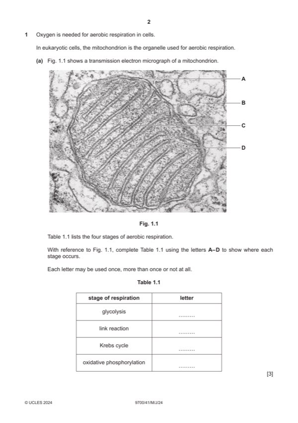

Question 1

Original paper page 2
Part 1(a) — solution
Answer: 3
3
stage of respiration letter
glycolysis B
link reaction D
Krebs cycle D
oxidative phosphorylation C
;;;
Mark points
- Correct result: 3
Part 1(b) — solution
any four from: 4
Mark points
- Include the ideas shown in the solution above.
Part 1 — solution
oxygen is the, final / last / terminal, electron acceptor ;
Mark points
- Include the ideas shown in the solution above.
Part 1(c) — solution
any three from: 3
Mark points
- Include the ideas shown in the solution above.
Part 1 — solution
palmitate-exposed cells, release / secrete, molecule / chemical / substance ;
Mark points
- Include the ideas shown in the solution above.
Part 1 — solution
protons / H+ ions, pumped, from guard cells / into guard cell wall ;
Mark points
- Include the ideas shown in the solution above.
Part 1 — solution
as abscisic acid concentration increases stomatal conductance decreases or negative correlation / inverse
correlation / inversely proportional ;
Mark points
- Include the ideas shown in the solution above.
Part 1 — solution
(random / spontaneous) mutation gave resistance ;
Mark points
- Include the ideas shown in the solution above.
Part 1 — solution
more, transpiration / water loss (from leaves) ;
Mark points
- Include the ideas shown in the solution above.
Part 1 — solution
- recessive / mutation = faulty / inactive / no, tyrosinase ;
Mark points
- recessive / mutation = faulty / inactive / no, tyrosinase ;
Part 1 — solution
Answer: BF · Bf · bF · bf
BF Bf bF bf ;
Punnett square
BF Bf bF bf
BBFF BBFf BbFF BbFf
BF
black black black black
BBFf BBff BbFf Bbff
Bf
black white black white
BbFF BbFf bbFF bbFf
bF
black black brown brown
BbFf Bbff bbFf bbff
bf
black white brown white
Mark points
- Correct result: BF
- Correct result: Bf
- Correct result: bF
- Correct result: bf
Part 1 — solution
high(er) mutation rate gives more, genetic diversity / genetic variation / alleles / chance of beneficial allele ;
Mark points
- Include the ideas shown in the solution above.
Part 1 — solution
(improve named) quality of, animal / milk ;
Mark points
- Include the ideas shown in the solution above.
Part 1 — solution
assess / categorise / rank, species, threat level / conservation status ;
Mark points
- Include the ideas shown in the solution above.
Part 1 — solution
no / not separate species / same species ;
Mark points
- Include the ideas shown in the solution above.
Part 1 — solution
one / two, genes (control colour pattern) ;
Mark points
- Include the ideas shown in the solution above.
Part 1 — solution
sucrose binds to, receptor protein / (chemoreceptor) cell surface receptor ;
Mark points
- Include the ideas shown in the solution above.